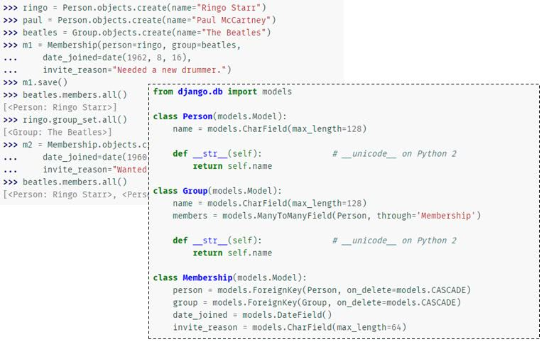
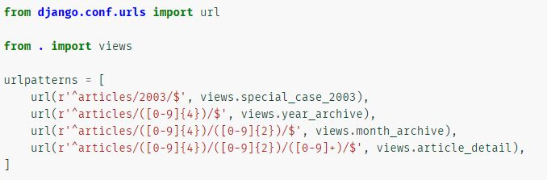
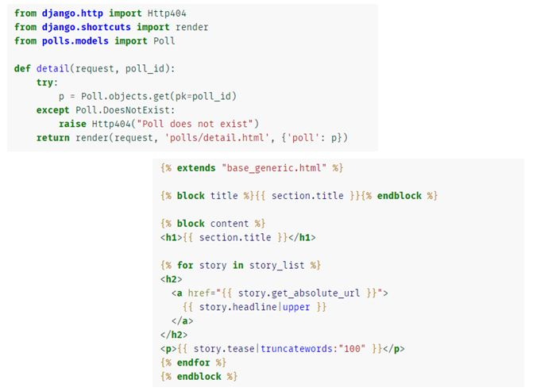
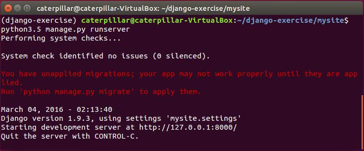
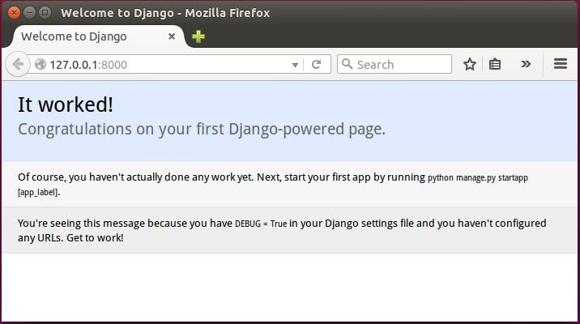

接下來會使用 Django 這個框架來進行 Web 應用程式的練習，在 Python 的世界中，如果你願意遵守且認同 Django 定義的流程、語義等，那你就會覺得這是個高階、快速開發、簡潔的 Web 框架。
認識 Django
來看一下官方網站上幾個範例片段 … 像是永續化時的模型（Model）設計 …

這是 URL 設計時的方式，使用正則表示式來設計 URL …

畫面（View）設計與樣版系統 …

以下透過練習直接來準備一下 Django 專案 …
練習 12：建立 Django 專案
在實際進行這門課程時，使用的 Django 版本是 1.9.3，因而這邊的示範是以此版本為主 … 這邊會建立一個虛擬環境，並透過 pip 來安裝 Django，指令如下：
$ python3.5 -m venv django-exercise
$ cd django-exercise
$ source bin/activate
$ pip install Django
$ python -c "import django; print(django.get_version())"
$ django-admin startproject mysite
$ cd mysite
$ python3.5 manage.py runserver
指令中透過 django-admin startproject mysite 建立了一個 Django 專案為 mysite，完成 python3.5 manage.py runserver 指令後，你應該會看到 Django 開發時的簡單伺服器啟動了 …

開啟你的瀏覽器，瀏覽 http://127.0.0.1:8000/，你應該會看到以下畫面 …

這個專案中還有什麼呢？後面我們還會繼探討 …